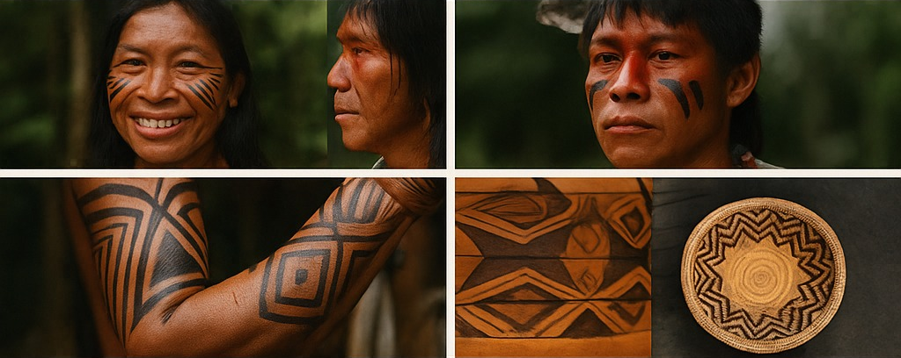
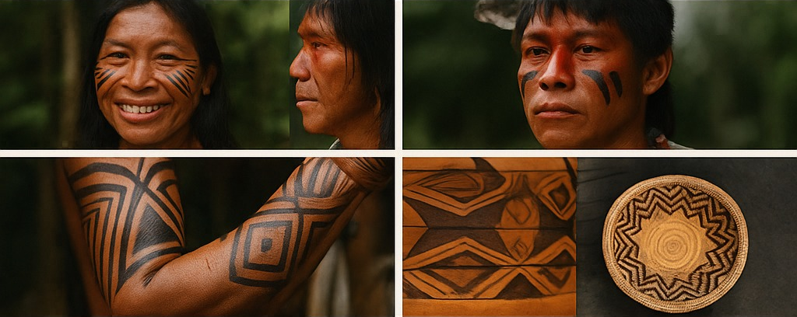

Bem-vindo ao Nhandereko
Este é o espaço dedicado à filosofia de vida do povo Guarani. Explore a riqueza de sua cultura, seus rituais, artesanato e a conexão profunda com a natureza.
Este é o espaço dedicado à filosofia de vida do povo Guarani. Explore a riqueza de sua cultura, seus rituais, artesanato e a conexão profunda com a natureza.
